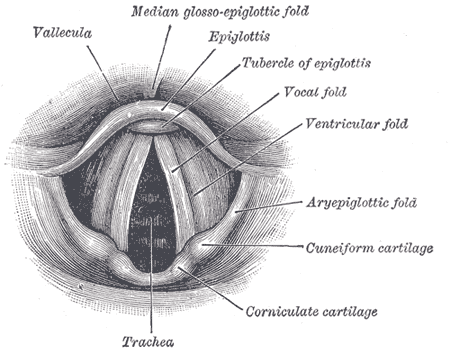

Understanding Vocal Folds
The vocal folds, also known commonly as vocal cords or voice reeds, are composed of twin infoldings of mucous membrane stretched horizontally, from back to front, across the larynx. They vibrate, modulating the flow of air being expelled from the lungs duringphonation.
Open during inhalation, closed when holding one's breath, and vibrating for speech or singing (oscillating 440 times per second when singing A above middle C), the folds are controlled via the vagus nerve. They are white because of scant blood circulation.
Birds do not produce vocal sounds by means of vocal folds but by oscillations of membranes in the syrinx.

If your vocal chords are tight- or you feel your throat and neck clampoing up, it may be a bad idea to attempt any singing. Here are some important elements to keep in mind regarding relaxed, healthy vocal chords before singing.